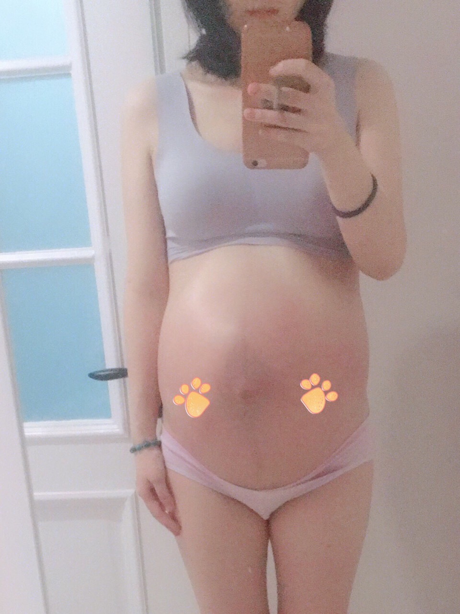
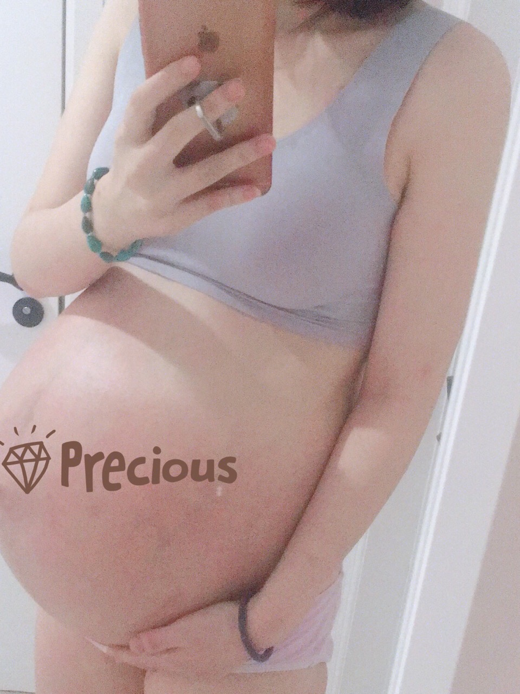

【好孕加油站】厉害了，闺蜜的建议让备孕3年的我成功怀孕！《献给备孕的朋友，真实分享》
孕前检查
和邓先生是2014年结婚的，我们在剑桥大学的青年企业家seminar认识的他37我27，我算是最佳的年纪遇见了最好的他。彼此的事业也算是稳定就一门心思想尽快有个宝宝。孕前检查都做好了，等待了半年也没怀上，基于自己有人流的经历，也不想浪费过多的时间，我算是一个理智的人吧，所以做了输卵管造影，结果是左侧通而不畅，右侧几乎全部堵塞，医生建议我做宫腹腔镜，但是我拒绝了，查了很多资料，做完也不一定怀上，我选择了最直截了当的方法试管......
试管之路
2015年试管印象最深刻的就属取卵了，因为一直卵子长不大，每天加大剂量打促排，从150加到450，导致后面很严重的并发症，取卵的时候打了杜冷丁，但是肯定不能止痛，等候的时候，一个个出来的人都是挂着泪水的，我自己也渐渐紧张无助，轮到我的时候，我第一次想放弃一件事，几个护士报了主任医师后抬着我上了手术台，过程真的很痛苦，取卵后还有过度刺激症，喝的水吃的食物根本排不出，吃不好睡不好，盆腔积液严重，最后直接住院治疗，可悲的是后面2移植给我宣布的结果都是失败，人生中第一次有如此大的挫败感。大概是因为并发症和两次移植的失败吧检查AMH值下降了，只有1.48了。医生建议喝中药调理调理。
中药调理
2016我决心开始试试中药调理身体再考虑试管，我托关系找到了中国中医科学院荣誉首席研究员李今庸教授，每个月都会抽空找他面诊一次，不过我的月经倒是调理的和高中时代一样了，量多了，前几年因为人流月经只有一点点了，并且夜晚也没有血流出了，想想高中时代的我一来月事床单总爱被弄脏的，这点让我很惊喜，坚持喝了半年，AMH值没有太大的变化，2017年也陆陆续续试了几个中医，理智的我也开始被逼迫的凌乱起来，网上的滋膏都试过，每次抱着最大的希望去尝试，给我的回报都是如当头一棒。但是怎么办呢？我不努力去尝试难道我要放弃做一个妈妈？后来每周三次的瑜伽，泡脚，坚持测排卵，每天黑豆浆，艾灸，只要有利于怀孕的事我都做了。

奇迹怀孕
2018年偶尔一次和试管认识的一个病友聊天，得知她也是试管失败的竟然自然怀孕了，约着见面看看能不能求得经验，我算是不怕被人说闲话活的比较自我的一个人，所以身边的一些朋友怀孕的我都会请教一些经验吧，我觉得努力总有一天能尝到结果的甘甜，看着她带着牙牙学语的宝宝出现在我面前，我的心被她的宝贝萌化了，她介绍了一位悦古承的民间中医给我，家族传承，加上关注了很久大概半年，还是被她的专业和耐心以及负责的人品打动了。不说能自然怀孕能帮我调理好卵巢早衰也好，她的中药都带着淡淡的清香味，据说这是没有经过化学防腐的工序才有的天然的味道，感觉穿越了一回，再大城市生活的我也能喝上原汁原味的中草药汤。


因为工作繁忙，就只管着调理身体好了下半年进行试管移植，喝了两个月中药后，唯一的改善是很久不见的白带拉丝又出现了。不说中药多好，但是至少喝的时候确实有改变，这个给我小小的惊喜，同房也滋润很多。我记得非常清楚那个月老公和我只有一次同房，并且是体外，例假很奇怪的推迟了15天，一直肚子痛针刺一样，所以感觉是来月经的熟悉感，直到带着质疑测了个早孕试纸，意念灰出现再我面前，我在马桶上整整看了十分钟，才拿出去给老公看，我说这是做梦吧，第二天买了另外牌子的验孕试纸测又没有，再买个可丽蓝又测试显示怀孕了，这我才相信了自己真的怀上了，真的那几天晚上我都没睡好，想着一个小小的生命
生命终于等到了。姐妹们我那么多问题我从没想过自然怀孕的，想不到让我遇上了这么好的汤药，奇迹的体外自然怀孕。你们看了我的经历希望能驱散你心里的雾霾，这几年的折腾总的来说不仅收获了抗挫折能力也收获了宝宝，当然我也感谢我的老公这些年无微不至的照顾和以及对我的鼓励，坚持做一些运动还有泡脚真的对身体很有好处，我相信不仅是遇到一个对的医生还有我平时生活好习惯的养成才有今天的结果吧。祝你们都能传染我超强孕气！
精彩评论
东方女人
 20
20
楼主你说的是真的嘛？我今年29岁，输卵管堵塞多年了，喝中药真的有效果吗？
昨天
回复
我的情况不仅仅是输卵管堵塞的问题，比你复杂多了，我试过无数的办法，我喝了两个月的悦古承千年传承秘方配的野生中草药就怀孕了，你赶紧加老师的微信

做一个安静的女子
24
我也是吃中药怀的，调理身体不知不觉就怀上了，这一度觉得吃中药会不会对孩子有影响，整天提心吊胆
昨天
作者回复
样子老师家的吗？我吃的过程怀上的，宝宝已经生出来了，很健康的。
做一个安静的女子
有这个老师的联系方式吗？我也是卵巢功能差，双侧堵，看了你的帖子，感觉又有希望了，方便告知一下吗？会对身体有影响吗?
昨天
作者回复
老师那里有好多人你这种情况的，方子都是药食同源的，不会对身体有任何影响的，纯植物配方

刘倩倩
358
跪求楼主给个联系方式。真的我求医数十年已经45岁，输卵管也只剩一侧了，试管失败了，另一侧堵塞的，我真的要绝望了
昨天

大姐大
265
我也再悦古承调理，第一次再微信上治这个病，也是病急乱投医，希望我有效果，不过我是多囊，吃了2个月没怀月经开始正常了。老师还是很热情的。推荐。
昨天
苑枝回复
说到我的心坎里了，我就是用了好多办法，跳绳，喝药，艾灸，就是没见怀孕，听楼主说的，花钱是小，耽误病情事大，我也去找老师调理吧，希望这次调理好

静静
301
加上微信了，观望观望朋友圈再买，我也是通而不畅，宫寒，月经淋漓不尽，很多毛病。
昨天

讲不出再见
22
我现在准备二胎，一胎14年查出堵塞就再他们家调理生的男宝宝，现在一直二胎要不上，又得调理吧。不知道是不是又输卵管积水了，楼主是多少钱调理好的，我咨询价格比以前贵了。
作者回复
我是花了几千块钱，但是觉得很值得，你很幸运那么早就遇上了适合自己的老师，不像我花了冤枉钱不说自己受了不少罪，主要以前还是不特别相信中医，以为手术试管这些更科学。耽误不少时间。
推荐给你这个老师微信吧：
昨天

小五月
87
备孕之前看到这个，还是应该先把宫寒，月经不调调理好再要孩子。
昨天
梦里他乡
34
我今年都39了。得了多囊，输卵管检查也是一侧远端堵塞，一侧通而不畅。医生叫我宫腹腔镜，我打算手术了
昨天
匿名回复
听说手术容易复发，我闺蜜手术后复发了，再次堵塞，我觉得手术需要谨慎。
俩宝妈妈
167
一直想要个孩子却怀不上， 医生也说不出什么原因，婆婆已经开始嫌弃我了，受不了冷眼旁观的，在哪买？这是名气很大的那个样子老师吗？
昨天
作者回复
对的，就是那个样子老师
流年
239
我女儿是多囊卵巢，用这个老师的方子已经有一段时间了，现在月经来的很规律，比上个月要瘦一点了。要点个赞！
昨天

心尚温
96
这么神奇？还有这种操作？
昨天

空心人
45
怎么买啊？加微信就行？
昨天
作者回复
这是样子老师的微信
，你有需要可以加上问问。